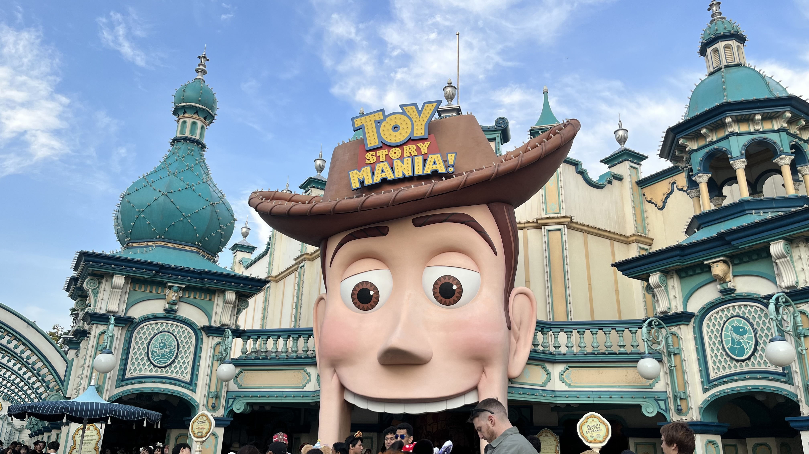
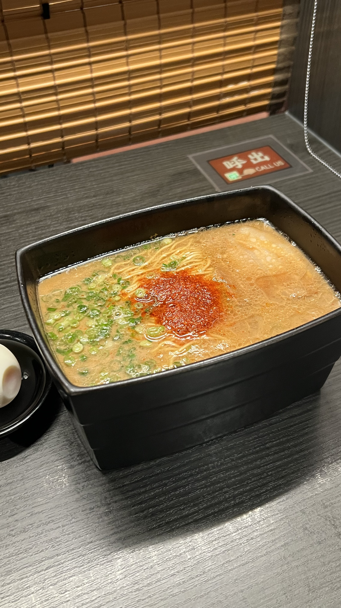

일본 여행에서 기억에 남은 맛
여행에서 오래 남는 기억 중 하나는 그때 먹었던 음식입니다. 특히 후쿠오카 이치란 라멘 본점은 장소 자체가 여행의 목적이 될 만큼 인상적이었습니다. 오사카에서는 길거리 음식과 야경이 함께 떠오르고, 도쿄에서는 테마파크 안에서 먹었던 간식들이 여행 분위기를 더 오래 기억하게 해줍니다.
- 도쿄: 디즈니씨에서 먹는 간식과 음료
- 오사카: 도톤보리 거리 음식과 따뜻한 야식
- 후쿠오카: 이치란 라멘 본점의 라멘
Japan Travel Archive
도쿄의 설렘, 오사카의 밤, 후쿠오카의 따뜻한 한 그릇을 모았습니다.



여행에서 오래 남는 기억 중 하나는 그때 먹었던 음식입니다. 특히 후쿠오카 이치란 라멘 본점은 장소 자체가 여행의 목적이 될 만큼 인상적이었습니다. 오사카에서는 길거리 음식과 야경이 함께 떠오르고, 도쿄에서는 테마파크 안에서 먹었던 간식들이 여행 분위기를 더 오래 기억하게 해줍니다.
오사카에서 찍은 일루미네이션 영상입니다. controls 속성으로 재생과 정지를 직접 조작할 수 있습니다.